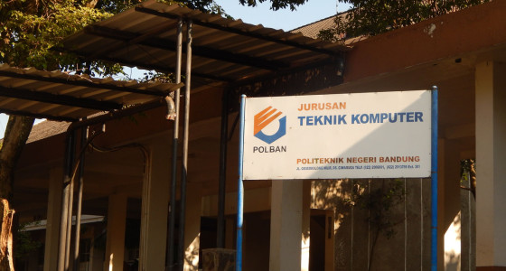

Profil JTK
Jurusan Teknik Komputer dan Informatika Politeknik Negeri Bandung (lebih dikenal dengan singkatan JTK) merupakan jurusan penyelenggara pendidikan diploma bidang teknologi informasi pertama di Indonesia. Jurusan ini telah menyelenggarakan pendidikan D-3 bidang teknik komputer dan informatika sejak 1977 dan pendidikan D-4 sejak 2009.
Dengan daya tampung sekitar 96 mahasiswa per tahun, sampai saat ini JTK telah menghasilkan lebih dari 2.500 alumni yang bekerja pada berbagai sektor industri, baik di dalam maupun di luar negeri.
Selain menjalankan pendidikan, JTK juga menyelenggarakan penelitian dan pengabdian kepada masyarakat dalam bidang teknologi informasi. Sebagai jurusan pertama yang menyelenggarakan pendidikan profesional bidang teknologi informasi, JTK selalu dijadikan tolok ukur dan telah banyak memberikan bantuan teknis dan non-teknis kepada institusi lain maupun kepada masyarakat umum. Beberapa aktivitas yang sering dilakukan di antaranya adalah pembinaan institusi, pelatihan bidang TI, konsultasi pemanfaatan TI untuk menunjang kegiatan kerja, pengembangan sistem informasi, dan lab/bengkel komputer layanan masyarakat.